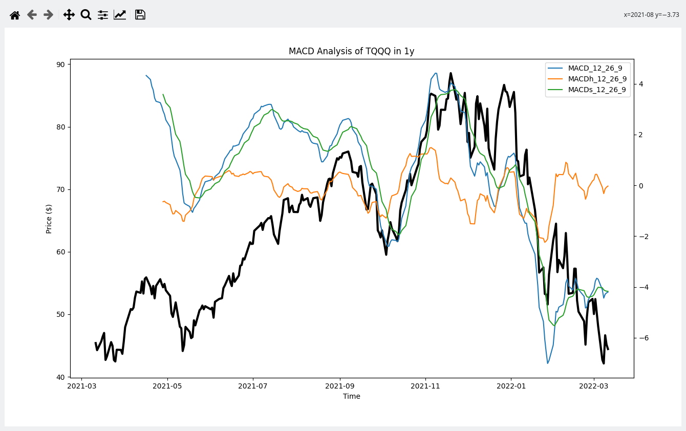

Software dependencies, Build automation
Software Engineering
(for Intelligent Distributed Systems)
Module “Principles and Methods”
A.Y. 2023/2024
Giovanni Ciatto (reusing material made by Danilo Pianini)
Compiled on: 2024-03-11 — printable version
The build “life cycle”
(Not to be confused with the system development life cycle (SDLC))
The process of creating tested deployable software artifacts
from source code
May include, depending on the system specifics:
- Source code manipulation and generation
- Source code quality assurance
- Dependency management
- Compilation, linking
- Binary manipulation
- Test execution
- Test quality assurance (e.g., coverage)
- API documentation
- Packaging
- Delivery
Lifecycle styles
-
Custom: select some phases that the product needs and perform them.
- Flexible and configurable: tailored on each project’s needs
- Hard to adapt and port
-
Standard: run a sequence of pre-defined actions/phases.
- Portable and easy to understand: replicated on every product
- Limited configuration options
Build automation
Automation of the build lifecycle
- In principle, the lifecycle could be executed manually
- In reality time is precious and repetitivy is boring
$\Rightarrow$ Create software that automates the building of some software!
- All those concerns that hold for sofware creation hold for build systems creation…
Build automation: basics and styles
Different lifecycle types generate different build automation styles
Imperative: write a script that tells the system what to do to get from code to artifacts
- Examples: make, cmake, Apache Ant
- Abstraction gap: verbose, repetitive
- Configuration (declarative) and actionable (imperative) logics mixed together
- Highly configurable
Declarative: adhere to some convention, customizing some settings
- Examples: Apache Maven
- Separation between what to do and how to do it
- The build system decides how to do the stuff
- Configuration limited by the provided options
Hybrid automators
Create a declarative infrastructure upon an imperative basis, and allow easy access to the underlying machinery
Domain-Specific Languages are helpful in this context: they can “hide” imperativity without ruling it out
Still, many challenges remain open:
- How to reuse the build logic?
- within a project, and among projects
Many modern languages (such as Rust) come with a build automator as part of their distribution.
In Python
Python is an interpreted language
- An arguably old one, too (1991)
- Initially used mainly for scripting
- No need to compile (as far as the project is pure Python)
- Build systems were a less pressing concerns than with other platforms…
The need for build systems in Python emerged with more complex use cases
- Since there were none, now there are several tools that do build-related jobs:
| Anaconda | Conda | Miniconda | pip |
| Poetry | PyBuilder | PyEnv | virtualenv |
- The feature set varies wildly
- They are meant to solve different problems!
A simple financial application
Build an application that performs a simple graphical MACD analysis of a financial product:

- How many Non-Comment Lines of Code (NCLoC)?
A possible solution
import matplotlib
import matplotlib.pyplot as plt
import pandas_ta as ta
import sys
import yfinance as yf
from matplotlib.backends.qt_compat import QtWidgets
from matplotlib.backends.backend_qtagg import (FigureCanvas, NavigationToolbar2QT as NavigationToolbar)
from matplotlib.figure import Figure
class ApplicationWindow(QtWidgets.QMainWindow):
def __init__(self, figure):
super().__init__()
self._main = QtWidgets.QWidget()
self.setCentralWidget(self._main)
layout = QtWidgets.QVBoxLayout(self._main)
static_canvas = FigureCanvas(figure)
layout.addWidget(NavigationToolbar(static_canvas, self))
layout.addWidget(static_canvas)
if __name__ == "__main__":
arguments = iter(sys.argv)
next(arguments)
ticker = next(arguments, 'BTC-USD')
period = next(arguments, '1y')
data = yf.Ticker(ticker).history(period=period)[['Close', 'Open', 'High', 'Volume']]
macd = ta.macd(close = data['Close'], fast = 12, slow = 26, signal = 9, append = True)
fig = plt.figure()
ax = fig.add_subplot(1, 1, 1)
title = f'MACD Analysis of {ticker} in {period}'
ax.set_title(title)
ax.set_ylabel('Price ($)')
ax.set_xlabel('Time')
ax.plot(data['Close'], color = 'black', linewidth = 3)
ax2 = ax.twinx()
ax2.plot(macd)
ax2.legend(['MACD_12_26_9', 'MACDh_12_26_9', 'MACDs_12_26_9'])
fig.tight_layout()
qapp = QtWidgets.QApplication.instance()
if not qapp:
qapp = QtWidgets.QApplication()
app = ApplicationWindow(fig)
app.windowTitle = title
app.show()
app.activateWindow()
app.raise_()
qapp.exec()
The trick: using a few libraries
- yfinance
- Financial data from Yahoo! Finance
- Pandas
- Data in tabular format
- Pandas-TA
- Pandas technical analysis enhancement
- PyQt5
- Graphical interface
Actual dependency tree
matplotlib==3.5.1
cycler==0.11.0
fonttools==4.30.0
kiwisolver==1.3.2
numpy==1.22.3
packaging==21.3
pyparsing==3.0.7
Pillow==9.0.1
pyparsing==3.0.7
python-dateutil==2.8.2
six==1.16.0
pandas-ta==0.3.14b0
pandas==1.4.1
numpy==1.22.3
python-dateutil==2.8.2
six==1.16.0
pytz==2021.3
PyQt5==5.15.6
PyQt5-Qt5==5.15.2
PyQt5-sip==12.9.1
yfinance==0.1.70
lxml==4.8.0
multitasking==0.0.10
numpy==1.22.3
pandas==1.4.1
numpy==1.22.3
python-dateutil==2.8.2
six==1.16.0
pytz==2021.3
requests==2.27.1
certifi==2021.10.8
charset-normalizer==2.0.12
idna==3.3
urllib3==1.26.8
- 4 direct dependencies
- 21 transitive dependencies
In large projects, transitive dependencies often dominate
Towards a dependency hell
- It’s common for non-toy projects to get past 50 dependencies
- Searching, downloading and verifying compatibility by hand is unbearable
- Version conflicts arise soon
- one of your direct dependencies uses library A at version 1
- another uses library A at version 2
- $\Rightarrow$ transitive dependency conflict on A
- Upgrading by hand requires, time, effort and tons of testing
Dealing with dependencies
Source import
Duplication, more library code than business code, updates almost impossible, inconsistencies, unmaintainable
Binary import
Hard to update, toxic for the Version Control System
Desiderata
- Declarative specification of libraries and versions
- Automatic retrieval
- Automatic resolution of transitive dependencies
- Dependency scopes
- In general, you may need compile-only, test-only, and runtime-only dependencies
- not specifically in Python and other interpreted languages
- Customizable software sources
Reproducibility
We want that something that works for us works for everyone
We do not want to depend on the system configuration
We want to declare our requirements and have a machine figure out how to configure the system
We want everyone to be able to rebuild the exact same environment
Python pip
pip is the package installer for Python
By default, fetches packages on the Python Package Index (PyPI)
- It is the standard package repository for Python
Pip is shipped with most Python distributions
Using pip
pip install package_name- Installs
package_namefor the current user - Running with
sudoinstalls the packages system-wide - In any case, the installation is global
- Installs
pip install -r requirements.txt- Reads the contents of the provided text file
- It flattens them and runs a normal
pip install - The file name is arbitrary, but it is customary to use
requirements.txt- (also helps with automation)
Example requirements.txt
matplotlib ==3.7.1
pandas_ta ==0.3.14.b
pip ==23.1
pyqt5 ==5.15.9
yfinance ==0.2.18
The problem with global installations
What if, for two different projects, you need two different versions of the same library?
- We need isolated environments!
pipdoes not support them!
Workarounds, anyone?
Virtualenv and venv
- Tell
pipto install into a specific folder (e.g.,foo/bar)- there exist an option in recent versions of
pip:--target=foo/bar
- there exist an option in recent versions of
- Tell
pythonto search libraries infoo/bar- by default, the interpreter looks into the paths listed in the environment variable
PYTHONPATH
- by default, the interpreter looks into the paths listed in the environment variable
Cumbersome if done manually!
venv and virtualenv deal with isolation of multiple python library installations
a.k.a. virtual envelopes
venvis in the standard libraryvirtualenvis not, but has some additional features- They are almost completely interchangeable
venv
-
- Tell Python where to initialize the virtual environment:
python3 -m venv /path/to/new/virtual/environment- Commonly:
python3 -m venv .venv - From Python 3.9, it can update
pipwith--upgrade-deps - inside the target folder, the script copies or symlinks the Python binaries
-
- Activate the virtual environment
- Bash/Zsh:
source .venv/bin/activate - Powershell:
.venv\Scripts\Activate.ps1 - it shims the terminal commands to run inside the virtual envelop
-
- Install all your dependencies
pip install -r requirements.txt
-
- Once done, deactivate the virtual environment
deactivate- The command is added upon activation and restores the “normal” shell behavior
Exercise:
- Create a new virtual environment, activate it, and deactivate it
- From the
masterbranch of the finance-plot example, run the application using the virtual environment, then deactivate it.
Python’s conflicting standards

Since there were no standard management systems originally, multiple tools proliferated
- The Python Packaging Authority (PyPA) is inconsistent in its suggestions:
Interpreter as dependency
If you designed your software for Python 3.0, it might not work in Python 3.10
- indeed, it is very likely that if you designed it for Python 2.x it won’t work in Python 3.x
In languages that require a runtime (Python, Javascript, Java…) the runtime is a dependency as well!
And again: multiple projects may require different versions
- We need something to manage multiple Python versions on the same system at the same time
- How to port them across different installations?
Pyenv
- Neither
venvnorvirtualenvdeal perfectly with the interpreter isolation - Ideally, we would like to write the interpreter version somewhere, and have it downloaded
- Additional tools exist for this scope, e.g.,
pyenv- Allows multiple installations of Python per-user
- They are reused per-project
- Controlled by a simple
.pythonversionfile in the project root
We still have consistency issues:
venv/virtualenvdo not isolate the interpreter versionspyenvdoes not create virtual envelopes per-project
We need these tools to communicate to achieve per-project virtual envelopes with embedded python
- A plugin of pyenv for using virtualenv exists
- …but the situation is getting rather complicated…
Poetry
Integrated management of dependencies in Python
- Very recent (first release in 2018)
- Declarative configuration via TOML
- Manages both the interpreter and the library dependencies
- For the interpreter, it requires pyenv
- Simplifies packaging
- Relies on convention over configuration
- Pre-configured overridable sensible defaults
- or: if the project is set up as expected, then there is almost no configuration necessary
Conventional directory structure
Library:
project-name
├── pyproject.toml
├── README.md
├── project_name
│ └── __init__.py
└── tests
├── __init__.py
└── test_project_name.py
Module:
project-name
├── pyproject.toml
├── README.md
├── project_name.py
└── tests
├── __init__.py
└── test_project_name.py
Dependency ranges and locking
- A project can depend on a specific version of a library or on a range of versions
- We want to be able to specify ranges, but retain the ability to use an exact version
This software is compatible with
libraryversion 2.x. For our examples, we used version 2.6.87
Expressing something like this is done via dependency locking:
- Configure the build file with the range of supported versions
- Use the build tool to lock the dependencies (pinpoint their version)
- In practice, create a lock file where the exact version is explicit
- Locking usually also locks the transitive dependencies!
- Once locked, we have a snapshot of a working environment
Example configuration file
[tool.poetry]
# Packaging information
name = "python-finance-plot"
version = "0.1.0"
description = "Sample application of financial plotting with Python"
authors = ["Danilo Pianini <danilo.pianini@unibo.it>"]
license = "MIT"
[tool.poetry.dependencies]
# Dependencies
python = "^3.9.0"
matplotlib = "3.5.1"
pandas_ta = "0.3.14.b"
pip = "22.0.4"
pyqt5 = "5.15.6"
yfinance = "0.1.70"
[tool.poetry.dev-dependencies]
[build-system]
# Implementation details
requires = ["poetry-core>=1.0.0"]
build-backend = "poetry.core.masonry.api"
Poetry: initialization
Poetry provides a built-in tool to initialize a repository
poetry new project-name- Initializes the directory structure
- Creates a stub TOML configuration
- Alternatively, for existing projects, a
poetry initinteractive process is available for migration
Poetry: virtual environments
Similar to venv, Poetry creates virtual environments (embedding the interpreter, too)
poetry shell- activates the environment
- the environment can be deactivated with
exit
poetry env info- prints information about the currently activated virtual environment
poetry env list- lists all the virtual environments associated with the current project
poetry useis the subcommand to determine which enviroment to usepoetry use systempicks the python version from thePATHpoetry use /path/to/pythonselects an existing version of python
Lessons learned
- Building a piece of software is not just writing code
- Software requires dependencies
- Dependency management is difficult
- All components of a runtime are part of the dependencies
- Including interpreters
- Build Reproducibility is paramount
- Automatic configuration is desirable
- The Python build ecosystem is fragmented
- Poetry is a modern take on Python dependency management and packaging
- PyEnv can be used to let multiple Python versions live together